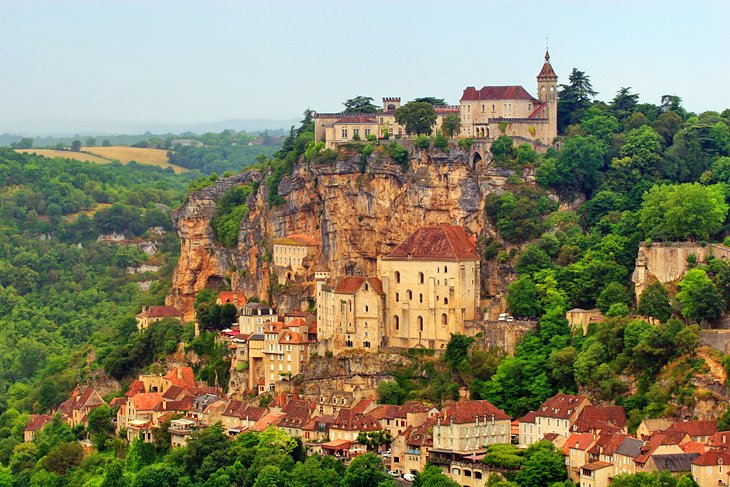

Rocamadour is suspended on a sheer limestone cliff as if
providing a medium for spiritual wonders. In the 11th century, this pilgrimage destination
was the third most important in Christendom after Jerusalem and Rome.
The village has seven ancient sanctuaries, but pilgrims flock to the Chapelle Notre-Dame
(Chapelle Miraculeuse), which possesses the venerated Black Virgin (Notre-Dame de Rocamadour).
This precious Virgin Mary figure was carved from walnut wood that naturally darkened over the
centuries and is associated with miracles.
Back